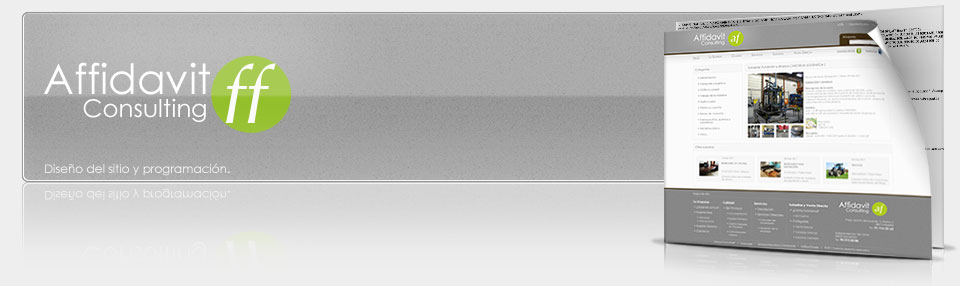
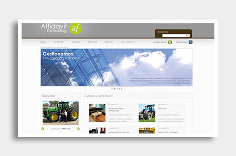
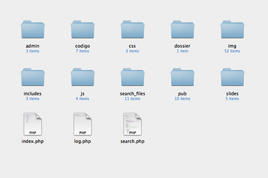
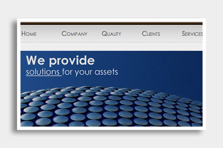

Proyecto Affidavit ConsultingLa empresa española Affidavit Consulting, dedicada a la gestión de activos mediante la venta de bienes y derechos, a través de la agencia Eslogico inicia el proyecto de construcción de su sitio web, el cual tiene como objetivo mostrar al público en general el ámplio catálogo de activos, disponibles para su adquisición mediante subasta o venta directa. Mi participación en el proyecto tiene lugar en dos fases principales del desarrollo: Diseño (look&feel).Se realizaron 2 propuestas de diseño distintas para el proyecto, de las cuales la mía resultó la aprobada para la producción. Las características destacables de esta propuesta son:
Una vez aprobado el diseño se incorporó el mismo en un framework a modo de template. Programación (framework: SDU).La programación consitió en el desarrollo de un framework o back-end, que permitiera gestionar el contenido del sitio así como los distintos sistemas que funcionarían en conjunto, que son: Gestión de contenidoLa idea era facilitar la gestión del contenido fijo del sitio; Imágenes, copys, animaciones, etc. con la finalidad de permitir la adición de contenido de la forma más sencilla. Para lograrlo hice uso del sistema SDU programado en PHP, el cual ya había tenido muy buen desempeño en la gestión de campañas de ámplio alcance como las de Sorteo Tec. SDU permitió agregar contenido al sitio web como un archivo de HTML simple, el cual es incorporado por el sistema, se le asigna un título y finalmente se le integra el look&feel general del sitio mediante CSS y PHP, todo lo anterior sucede de forma automática. Sistema de usuariosSDU fué, como su nombre lo dice, originalmente programado como un sistema de usuarios, al cual he ido agregando funcionalidad con el paso del tiempo, sin perder su objetivo original, el de gestionar una cantidad N de usuarios. affidavitconsulting.com utiliza una versión modificada de SDU para gestionar su base de usuarios. La modificación tuvo que realizarse ya que el sistema de forma nativa tenía sólo soporte para conexión con bases de datos MySQL que es casi un estándar en servidores por su penetración, sin embargo la base de datos del cliente es una instancia de MSSQL, por lo que tuvieron que realizarse cambios en el sistema de conexión para agregar soporte al tipo de BDD. Sistema multilenguajeSDU a la fecha no cuenta con soporte multilenguaje. El desarrollo de un sistema multilenguaje era imperativo para el proyecto, ya que el alcance de potenciales clientes de Affidavit Consulting comprende a casi toda la Unión Europea. En este caso se realizó un trabajo de programación exclusivo, el cual tuvo como objetivo, además de la traducción automática entre lenguajes, permitir la especificación de términos legales. El desarrollo comprende éstos sistemas entre otros y ha sido uno de los proyectos en los que más me ha gustado participar. |